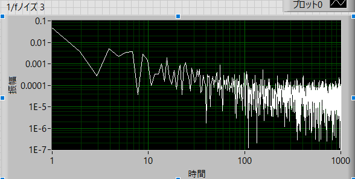
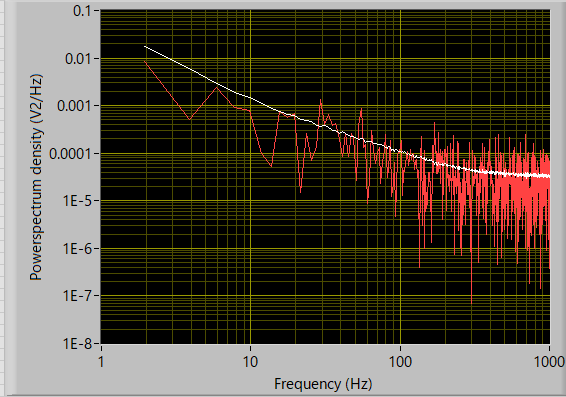

パワースペクトルの実際の作業内容-10
高周波領域はどうする？
両対数プロットをとったときの問題点を考えていきましょう．
ここと同じように，逆ｆノイズ波形を例にとると,
1/ｆノイズ（ピンクノイズ）を生成するために，
サンプル（サンプル数） ：2048
ノイズ密度（これはよくわかりません．．．） ：0.1
指数（たぶん，f^(-n)のｎのこと） ： 1
dt（このアイコン内での設定ではないですが） ： 0.5 ms
で生成した波形に対して，
FFTサンプル数 ： 2048
でパワースペクトルを計算すると

と両対数プロットの場合では，
高周波に行くに従い，ノイズ（ノイズのノイズ）が大きくなる
高周波に行くに従い，dfが密になる
低周波領域では，dfが荒い
ことがわかります．
ちなみに，この条件ですと，
\(\Large \displaystyle df = \frac{S_{freq}}{n} = \frac{1}{S_{time}}\)
ですので，
\(\Large \displaystyle df = \frac{1}{0.0005} \ \frac{1}{2048} = 0.9766 Hz\)
と約1 Hz
周波数帯ごとにポイント数を見ると，
1～10 Hz ： 9 point
10～100 Hz ： 90 point
100～1000 Hz ： 900 point
と対数プロットであるためにポイント数がだいぶ違います．
これを解消するためには，
周波数領域は変えずに，高周波領域でdfを荒くする
のが一番簡単な方法です．
フーリエ変換においては，
\(\Large \displaystyle df = \frac{S_{freq}}{n} = \frac{1}{S_{time}}\)
\(\Large \displaystyle f_{number} = \frac{n}{2} \)
\(\Large \displaystyle f_{range} = \frac{S_{freq}}{2} \)
ですので，
frangeは変えてはいけない ＝ Sfreqを変えない
dfを大きくする（Sfreqを変えずに） -> ｎを小さく（少なく）すればいい
ことになります．つまり，データ長を短くすればいいのです．
これで，上記の問題の，
高周波に行くに従い，dfが密になる
は解決できそうです．
しかし，まだ，
高周波に行くに従い，ノイズ（ノイズのノイズ）が大きくなる
をどうするか．．．
これは，解決策が簡単．
データ長が短くなったので，もともと長いデータを短くしてパワースペクトルを取り，加算平均すればいい
ことになります．パワースペクトルにおいては位相情報が失われるのでランダムノイズでも加算平均しても情報が失われません．
実際に，ピンクノイズを発生させて，一回のみのパワースペクトルと加算平均したパワースペクトルを比べてみましょう．
元データ
ピンクノイズ
実際の波形の時間 (s) ： Stime = 262.144 s
サンプル周波数 (1/s) ： Sfreq = 2,000 kHz
サンプル時間分解能 (s) ： dt = 0.0005 ms
実際の波形の数 ： n = 524288
FFTサイズ ： 1024
加算平均 ： 512 回

赤線が1回のみ，白線が512回の加算平均の結果です．
このようにノイズのノイズがだいぶ減少したことがわかります．
つまり，作業手順として，
すべてのデータを一度にフーリエ変換するのではなく，区切ってそれぞれにフーリエ変換する
それぞれのフーリエ変換結果を加算平均する
となります．
例えば，
元データのサンプル周波数が，524288 point，なら
1024 pointごとに区切る
それぞれをフーリエ変換（512回）
それぞれのフーリエ変換結果を加算平均する
ことで達成できます．
これで高周波領域対策は完了です．